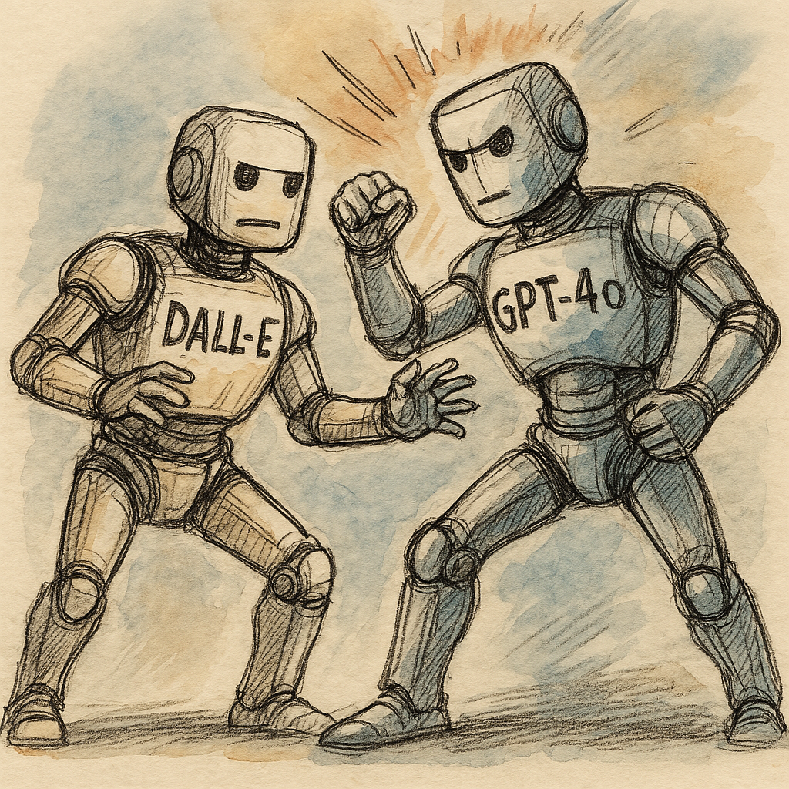

OpenAI ha lanzado una nueva herramienta integrada directamente en ChatGPT: un generador de imágenes basado en el modelo GPT-4o. Este avance no solo mejora la calidad visual, sino que también permite crear y editar imágenes directamente dentro del flujo conversacional, con mayor coherencia, precisión y velocidad.
Disponible para usuarios de varios planes —incluyendo una versión limitada para cuentas gratuitas— este nuevo sistema abre posibilidades interesantes tanto para usuarios creativos como profesionales del diseño, marketing o contenidos.
Características únicas del modelo GPT-4o
GPT-4o se presenta como un modelo multimodal avanzado, capaz de trabajar con texto, imágenes, audio y vídeo. Una de sus mayores novedades es que ahora puede generar imágenes dentro del propio chat, entendiendo el contexto y ofreciendo respuestas visuales adaptadas a la conversación.
GPT-4o entiende tanto lo que dices como cómo lo dices, y lo traduce en una imagen precisa y visualmente atractiva, sin necesidad de utilizar herramientas externas.
¿Qué lo hace especial?
- Respuestas casi instantáneas: genera imágenes con una latencia media de 320 milisegundos.
- Representación mejorada del texto dentro de las imágenes (carteles, etiquetas, etc.).
- Capacidad para manejar entre 15 y 20 objetos distintos en una misma imagen sin perder coherencia.
- Opciones avanzadas de edición: se pueden modificar imágenes existentes con instrucciones sencillas.
- Control preciso de aspectos visuales: permite indicar colores exactos, relaciones de aspecto, estilos, fondos transparentes y más.
- Integración total entre texto e imagen, lo que permite resultados más creativos y fieles a lo que el usuario busca.
Generación de imágenes multiturno
Una de las funcionalidades más potentes de este nuevo sistema es la generación de imágenes multiturno. Es decir, puedes crear una imagen, revisarla y refinarla en varias interacciones consecutivas, como si estuvieras colaborando con un diseñador.
🎨 Perfecto para crear personajes, productos o ambientes que evolucionen poco a poco en base a tu feedback.
¿Qué permite esta función?
- Ajustes progresivos: puedes modificar partes específicas sin rehacer toda la imagen.
- Coherencia entre versiones: ideal para diseño de personajes, escenas o escenarios complejos.
- Iteraciones conversacionales: todo el proceso se desarrolla con lenguaje natural, sin comandos raros ni necesidad de saber código.
Cómo crear prompts efectivos
Como con cualquier IA generativa, el resultado depende en gran medida del prompt (la instrucción que le das). Aquí van algunas claves para conseguir imágenes potentes y ajustadas a tu idea:
| Elemento del prompt | Descripción | Ejemplo |
|---|---|---|
| Sujeto principal | ¿Qué quieres que aparezca? | Un astronauta, una flor, un gato medieval |
| Entorno | ¿Dónde se encuentra el sujeto? | En un bosque, oficina futurista, desierto |
| Estilo y composición | ¿Qué estética debe tener? | Realista, cómic, pixel art, acuarela |
| Iluminación | ¿Qué tipo de luz tiene la escena? | Luz suave, contraluz, neón, natural |
| Acción o postura | ¿Qué hace el sujeto? | Saltando, mirando al horizonte, sonriendo |
| Iteración | Refinamiento basado en resultados | Ajustar colores, añadir elementos, cambiar ángulo |
✏️ Cuanto más específico seas, más ajustada a tu idea será la imagen final.
ChatGPT vs DALL·E: diferencias clave
Aunque tanto ChatGPT con GPT-4o como DALL·E son generadores de imágenes de OpenAI, sus enfoques técnicos y resultados varían notablemente.
Diferencias fundamentales entre ambos generadores:
- Enfoque multimodal vs. especialización: GPT-4o está diseñado para manejar diferentes tipos de contenido (texto, imágenes, audio, etc.) en un único flujo de conversación. DALL·E 3, en cambio, se centra exclusivamente en crear imágenes de alta calidad a partir de descripciones textuales.
- Interacción nativa y edición multiturno: GPT-4o permite refinar imágenes paso a paso en la misma conversación, aprovechando el contexto acumulado. DALL·E 3, si bien ofrece herramientas de edición, funciona más de forma puntual, con menos integración conversacional.
- Uso según perfil de usuario: GPT-4o es ideal para quien necesita una herramienta versátil y conversacional. DALL·E 3 destaca más en casos donde se buscan imágenes complejas o con un estilo artístico muy definido, como ilustradores, creativos o diseñadores gráficos.
💡 Si buscas generar imágenes refinadas, con contexto, texto legible y capacidad de edición iterativa, GPT-4o en ChatGPT es la herramienta ganadora.
El nuevo generador de imágenes basado en GPT-4o supone un gran paso adelante en la forma en la que podemos crear imágenes con inteligencia artificial:
- ✅ Más rápido
- ✅ Más preciso
- ✅ Más conversacional
- ✅ Y con mayor control creativo desde el chat
Tanto si eres diseñador, creador de contenido, marketero o simplemente alguien con una idea visual que quiere dar forma, esta herramienta es una de las más versátiles y accesibles actualmente disponibles.
La clave está en probar, ajustar y experimentar. Cuanto mejor domines los prompts, mejores serán los resultados.